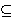

q 3 (mod 4).
Neka je P =
C =
Zn
i definiramo
q 3 (mod 4).
Neka je P =
C =
Zn
i definiramo
K = { (n, p, q, B) : 0 ≤ B ≤ n - 1 }.
Za K = (n, p, q, B) K definiramo
K definiramo
eK(x) = x(x + B)
mod n,
dK(y) =
√(B2/4 + y) - B/2 mod n.
|
Neka je n = p . q, gdje su
p i q prosti brojevi takvi da je
p
q 3 (mod 4).
Neka je P =
C =
Zn
i definiramo
K = { (n, p, q, B) : 0 ≤ B ≤ n - 1 }. Za K = (n, p, q, B)
K definiramo
eK(x) = x(x + B)
mod n, |
Ovdje a =
√b mod n
znaèi da je a2
b (mod n),
a dijeljenje s 2 i 4 znaèi množenje s inverzima od 2 i 4 u
Zn.
Važno je uoèiti da funkcija eK nije
injekcija. Naime, ako je w neki od 4 druga korijena iz 1
modulo n (dobiju se primjenom Kineskog teorema o ostatcima na
kongruencije x
± 1 (mod p),
x
± 1 (mod q),
onda imamo:
eK(w(x + B/2) -
B/2)
[w(x + B/2) - B/2]
[w(x + B/2) + B/2]
w2(x + B/2)2 -
(B/2)2
x2 + Bx
eK(x) mod n.
ElGamalov kriptosustav (Taher
ElGamal, 1985)
je zasnovan na teškoæi raèunanja diskretnog logaritma u konaènim
poljima.
|
Problem diskretnog logaritma: Neka je
(G, *) konaèna grupa,
α
G,
H = { αi : i
≥ 0 }
grupa generirana s α,
te β
H.
Naæi jedinstveni cijeli broj a takav da je
0 ≤ a
≤ |H| - 1 i
αa
= β, gdje je
αa
= α *
α * ... *
α
(a puta). Taj cijeli broj a se zove diskretni logaritam i oznaèava se s
logα β.
|
U originalnom ElGamalovom kriptosustavu je (G, *) = (Zp*, ·p), dok je α primitivni korijen modulo p, tj. α ima svojstvo da je { αi : i = 0, 1, ... , p - 1 } = Zp*. To znaèi da je u ovom sluèaju H = G. Najbolji poznati algoritmi za problem diskretnog logaritma u Zp* trebaju
exp(O((log p)1/3 (log log p)2/3))
operacija. Prema tome, ovaj problem je po kompleksnosti vrlo slièan problemu faktorizacije.Definicija ElGamalovog kriptosustava:
|
Neka je p prost broj i
α
Zp*
primitivni korijen modulo p.
Neka je P =
Zp*,
C =
Zp* ×
Zp* i
K =
{ (p, α,
a, β) :
β
Za K = (p, α, a, β)
K i tajni sluèajni
broj k
Zp -1
definiramo
eK(x, k) = (y1, y2), gdje je y1 = αk mod p i y2 = x βk mod p.Za y1, y2
Zp*
definiramo
dK(y1, y2) = y2(y1a)-1 mod p. |
Mogli bi reæi da se otvoreni tekst x "zamaskira" množeæi s βk. Onaj tko poznaje tajni eksponent a može iz αk izraèunati βk i "ukloniti masku".
Pored grupa Zp*, u ovom kontekstu od interesa su i sljedeæe grupe:
ElGamalov kriptosustav u GF(2n)* definira se na sasvim isti naèin kao u Zp*. Naime, multiplikativna grupa svakog konaènog polja je ciklièka. Najbolji poznati algoritmi za problem diskretnog logaritma u GF(2n) trebaju
exp(O(n1/3 (log n)2/3))
operacija. Tako se smatra da je za n > 1000 odgovarajuæi kriptosustav siguran ukoliko 2n - 1 ima barem jedan veliki prosti faktor.
Neka je p > 3 prost broj. Eliptièka krivulja
E : y2 = x3 + ax + b
nad Zp je skup rješenja (x, y)
Zp ×
Zp
kongruencije y2
x3 + ax + b (mod p), gdje su
a, b
Zp
takvi da je 4a3 + 27b2
≠ 0
u Zp,
zajedno s toèkom O
koju zovemo toèka u beskonaènosti.
Na eliptièkoj krivulji E možemo uvesti operaciju zbrajanja
uz koju E postaje abelova grupa. Neka su
P = (x1, y1),
Q = (x2, y2) iz E.
Ako je x1 = x2 i
y1 = -y2, onda je
po definiciji P + Q =
O. Inaèe, je
P + Q = (x3, y3),
gdje je
x3 = m2 - x1 - x2, y3 = m(x1 - x3) - y1,
m = (y2 - y1) /
(x2 - x1), ako je
P ≠ Q;
m = (3x12 + a) /
(2y1), ako je P = Q.
Geometrijski, zbrajanje možemo interpretirati tako da povuèemo pravac kroz P i Q (ako je P = Q, onda povuèemo tangentu). Taj pravac sijeèe E u tri toèke: P, Q i recimo P * Q. Tada je P + Q osnosimetrièna toèka toèki P * Q s obzirom na os x.

Kako je polovica elemenata iz Zp* jednaka kvadratu nekog elementa iz Zp*, za oèekivati je da E ima približno p toèaka (ako je toèka (x, y) u E, onda je takoðer i toèka (x, -y) u E). Preciznije, po Hasseovom teoremu, vrijedi:
p + 1 - 2√p ≤ |E| ≤ p + 1 + 2√p.
Nadalje, E Zm × Zk i vrijedi k | m i k | p - 1.Navest æemo jednu varijantu ElGamalovog kriptosustava koja koristi eliptièke krivulje. Zove se Menezes - Vanstoneov kriptosustav. Njegova je definicija:
|
Neka je E eliptièka krivulja nad
Zp (p > 3 prost),
te H ciklièka podgrupa od E generirana s
α.
Neka je K = { (E, α, a, β) : β = aα }. Vrijednosti E, α, i β su javne, a vrijednost a je tajna.Za K = (E, α, a, β)
K i tajni sluèajni
broj k
Z|H|,
te za x = (x1, x2)
Zp* ×
Zp*
definiramo
eK(x, k) = (y0, y1, y2), gdje je y0 = kα, (c1, c2) = kβ, y1 = c1x1 mod p, y2 = c2x2 mod p.Za šifrat y = (y0, y1, y2) definiramo dK(y) = (y1(c1)-1 mod p, y2(c2)-1 mod p), gdje je ay0 = (c1, c2). |
Najbolji poznati algoritmi za problem eliptièkog diskretnog logaritma trebaju O(√p) operacija. To pokazuje prednost kriptosustava zasnovanih na eliptièkim krivuljama u odnosu na RSA i ElGamalov kriptosustav. Naime, za postizanje iste sigurnosti kao kod RSA kriptosustava (a za ElGamalov vrijedi isto) s duljinom kljuèa od 1024 ili 4096 bita (a to su uobièajene vrijednosti), kod eliptièkih krivulja dovoljno je uzeti kljuè duljine 173, odnosno 313 bitova. Naravno, ova komparacija nije sasvim precizna, prvenstveno zbog toga što je implementacija grupovnih operacija kompleksnija u sluèaju eliptièkih krivulja. Ipak, ona može objasniti zašto su eliptièke krivulje u posljednje vrijeme predmet velikog interesa kriptografa.
Slièno kao kod ElGamalovog kriptosustava, za primjene u kriptografiji, uz eliptièke krivulje nad poljima Zp, važne su i krivulje nad poljima GF(2n). Napomenimo da ovdje (i opæenito kod polja karakteristike 2), treba promatrati malo drugaèiju jednadžbu, naime
E : y2 + xy = x3 + ax2 + b.
Merkle-Hellmanov kriptosustav (Ralph
Merkle i Martin Hellman, 1978)
za osnovu ima tzv. problem ruksaka. Pretpostavimo da imamo
n predmeta s volumenima v1,
v2, ... , vn
koje želimo staviti u ruksak volumena V. Dakle, želimo naæi
podskup J 
{1, 2, ... , n} tako da je
J.
|
Za dani skup {v1, v2,
... , vn} od n prirodnih brojeva i
prirodan broj V, naæi niz
m = (ε1,
ε2, ... ,
εn)
od n binarnih znamenaka
{0,1}) ε1v1 + ε2v2 + ... + εnvn = V, ako takav m postoji. |
Poznato je da je ovaj opæi problem ruksaka vrlo težak. On spada u tzv. NP-potpune probleme. To, pored ostalog, znaèi da nije poznat polinomijalni algoritam za njegovo rješavanje. Meðutim, specijalni sluèaj, tzv. superrastuæi problem ruksaka, je puno lakši. To je sluèaj kad je niz v1, v2, ... , vn rastuæi i vrijedi vj > v1 + ... + vj -1 za j = 2, 3, ... , n. Ova èinjenica je osnova za Merkle-Hellmanov kriptosustav, èija je definicija:
|
Neka je v = (v1, v2, ... ,
vn) superrastuæi niz prirodnih brojeva, te neka je
p > v1 + ... + vn
prost broj i 1 ≤
a
≤ p - 1.
Za 1 ≤
i ≤ n
definiramo Za K = (v, p, a, t) definiramo eK(x1, ... , xn) = x1t1 + x2t2 + ... + xntn. Za 0 ≤ y ≤ n(p-1) definiramo z = a-1y mod p, riješimo (superrastuæi) problem ruksaka za skup {v1, ... , vn, z} i tako dobivamoVrijednost t je javna, dok su vrijednosti p, a i v tajne. |
Godine 1982. Adi Shamir je pronašao polinomijalni algoritam za razbijanje Merkle-Hellmanovog kriptosustava. Prema tome, ovaj sustav se ne može više smatrati sigurnim kriptosustavom. Ipak, ideja na kojoj je zasnovan je vrlo zanimljiva. Ta ideja je korištenje u dešifriranju nekog jednostavnog specijalnog sluèaja nekog teškog (NP-potpunog) problema, s time da se taj specijalni sluèaj prikrije tako da izgleda kao opæi.
Ova ideja se koristi i u McElieceovom kriptosustavu (Robert McEliece, 1978). Ovdje je NP-potpun problem dekodiranje opæih linearnih kodova za ispravljanje grešaka. Kao osnova u ovom kriptosustavu koristi se specijalna klasa tzv. Goppa kodova za koje postoji polinomijalni algoritam za dekodiranje.
Jedan od najzanimljivijih novijih kriptosustava, koji je
još uvijek predmet intenzivnog prouèavanja,
je NTRU kriptosustav, koji su 1997. godine predložili
Jeffrey Hoffstein, Jill Pipher i
Joseph Silverman. U ovom se kriptosustavu
kod šifriranja koriste polinomi. Preciznije, koristi se
prsten
Jedna potencijalna, za sada samo teoretska, prednost NTRU kriptosustava u odnosu na RSA je vezana uz pitanje što bi se dogodilo s njihovom sigurnošæu ako bi se uspjelo konstruirati kvantna raèunala. Za razliku od klasiènih raèunala kod kojih je osnovna jedinica informacije jedan bit (koji može biti 0 ili 1), kvantna raèunala bi koristila ideje iz kvantne mehanike, te bi kod njih osnovna jedinica informacije - qubit - nosila puno više informacija. Takva raèunala još nisu praktièno realizirana u obliku koji bi bio konkurencija klasiènim raèunalima, ali takva realizacija nije iskljuèena u doglednoj buduænosti. Stoga se u posljednjih 15-tak godina radi i na algoritmima specijalno dizajniranim baš za takva raèunala. Od najpoznatih algoritama za kvantna raèunala je Shorov algoritam koji koristi èinjenicu da kvantne metode omoguæavaju vrlo brzo raèunanje perioda periodiènih funkcija. To daje polinomijalne kvantne algoritme za probleme faktorizacije i diskretnog algoritma. Znaèi da bi efektivna konstrukcija dovoljno snažnih kvantnih raèunala uèinila neupotrebljivim kriptosustave javnog kljuèa zasnovane na faktorizaciji (RSA, Rabin) i problemu diskretnog logaritma (ElGamal, ECC). Èini se da bi McElieceov i NTRU možda mogli biti sigurni i u eri kvantnih raèunala.
| Web stranica kolegija Kriptografija | Andrej Dujella - osobna stranica |